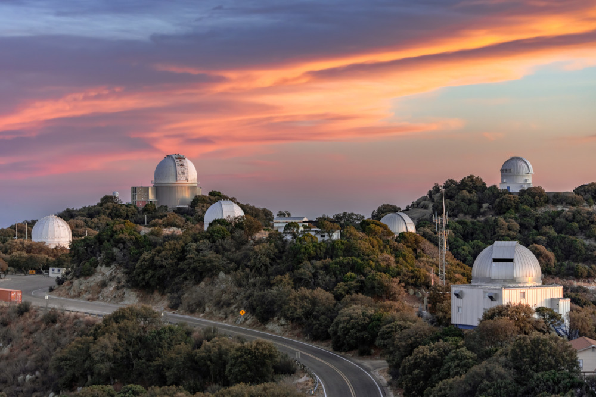
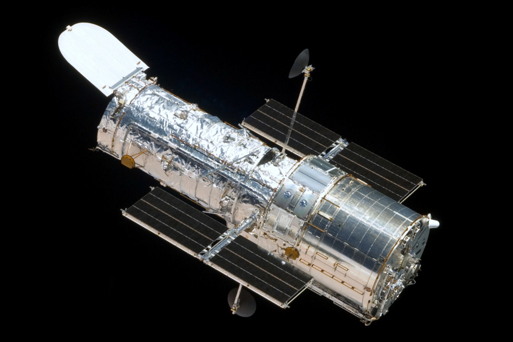
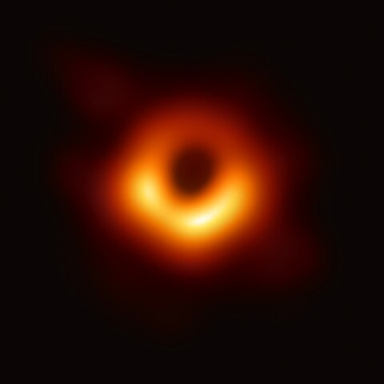

Space is Vast
We are minuscule compared to what we have seen beyond our planet. There are endless possibilities that expand throughout space.
Timelines Between Celestial Bodies Vary
Who knows how long a planet has lived? Who knows how long a galaxy has survived in one piece? There might be pieces of unnamed celestial bodies that have yet to be discovered.
Visuals of Space
Looking through telescopes can enhance what our human eyes might not see. Space has been seen as a collection of colorful and often bright lights that illuminate throughout.
Ground-Based
Kitt Peak National Observatory in the Quinlan Mountains, 2023
Space-Based
Hubble Bubble Telescope

Sagittarius A is a supermassive black hole that was discovered around 2017 and the first image was released in 2022. It was found in the center of the Milky Way galaxy. Black holes have strong gravity pulls that nothing can escape them; even light.

These are collections of stars that group together to make patterns. In naming constellations, people can recognize them when looking up. These are also used for navigation. This constellation is named Orion.

For the powerful telescopes such as the ones in observatories, Astronomers can view large images of galaxies outside of our own. Galaxies are systems of stars, planets, and other compositions that illuminate space. This is the Pinwheel Galaxy.